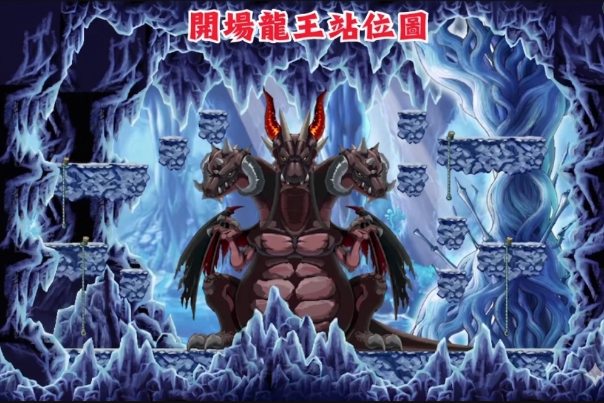

100% 地形還原 • 致命三神技走位練習 • 新增攻擊打擊任務
請點擊下方戰略地圖中的角色頭像，直接繼承該職業與開場站位：

歡迎來到 HORNTAIL DODGE 特訓模擬器！
• 操作：方向鍵移動，Alt 跳躍，Ctrl 攻擊，Shift 位移技能。
• 目標：閃避紅咬、紅閃、黑鎖、大噴火，並盡可能攻擊龍王頭部！
• 注意：請務必輸入您的特務代號才能進入特訓。法師因為有高機動性順移，僅有 2 條命，且魔心會隨機解除，需在 2 秒內按 Q 補回！
作者：咕咕嘎嘎
存活達成並完成擊殺目標
本遊戲需要橫向螢幕才能獲得最佳遊玩體驗